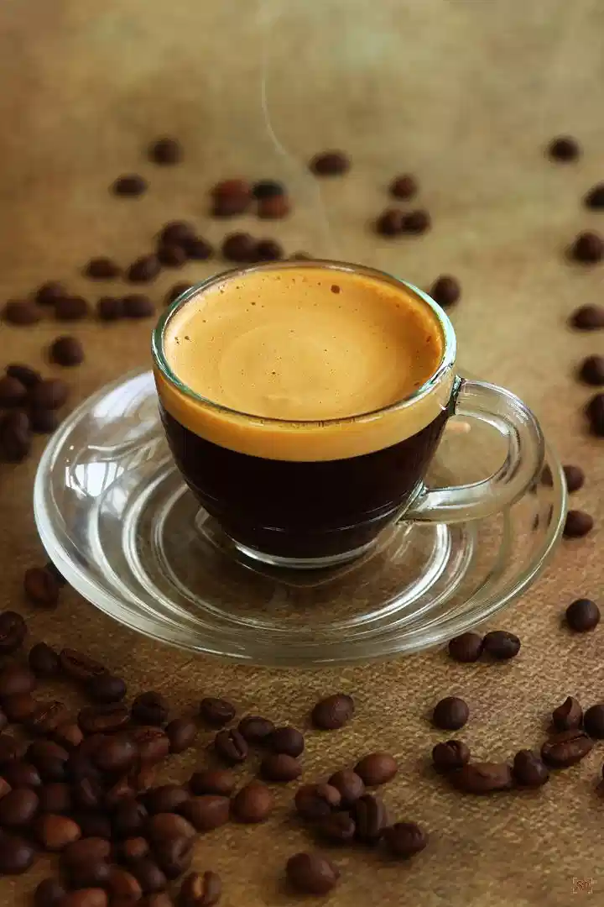
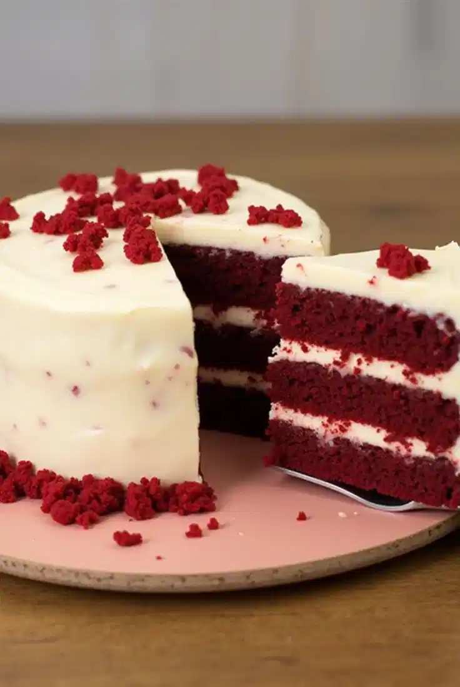
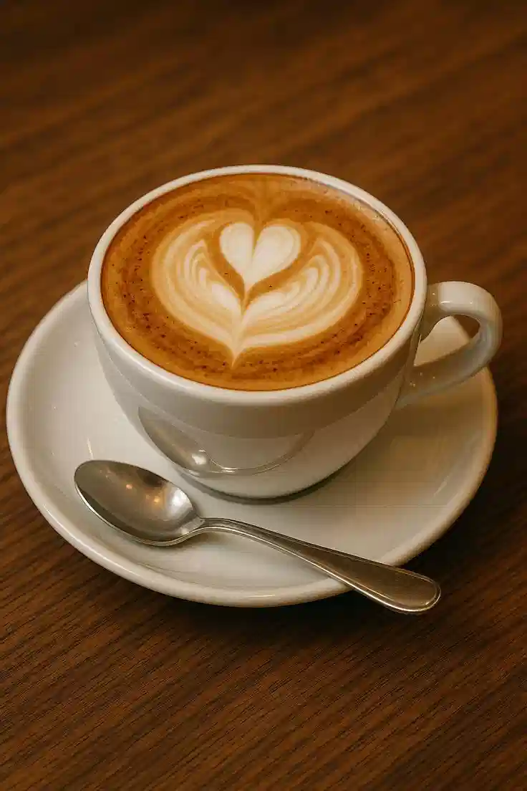
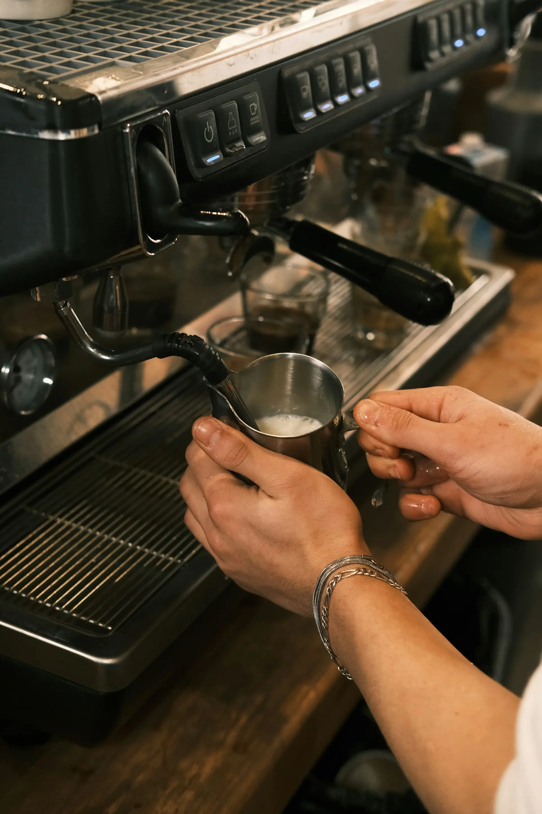

Bem-vindo ao Café do Bairro

O sabor que aquece sua alma
Experimente nossos cafés de torra especial e doces caseiros em um ambiente acolhedor e moderno.
Ver Cardápio CompletoNossos Destaques

Espresso da Casa
Grãos de altitude com notas de chocolate e caramelo. Torra média e equilibrada.
Ver detalhes →

Bolo Red Velvet
Massa aveludada, recheio de cream cheese e o toque suave de cacau.
Ver detalhes →

Cappuccino Clássico
O equilíbrio perfeito entre café, leite vaporizado e uma camada generosa de espuma.
Ver detalhes →Mais do que café, uma experiência.
Desde 2015, o Café do Bairro é um refúgio para quem busca qualidade, tradição e um ambiente que convida à pausa. Nossa história fictícia é construída sobre a paixão pelo grão perfeito e o desejo de criar conexões.
Conheça Nossa História
